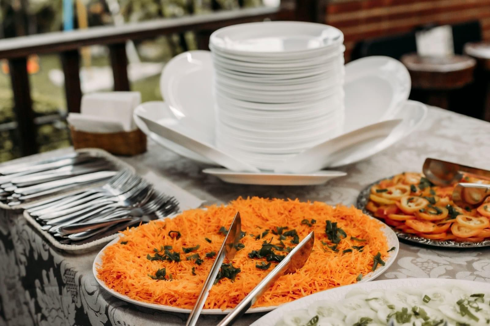
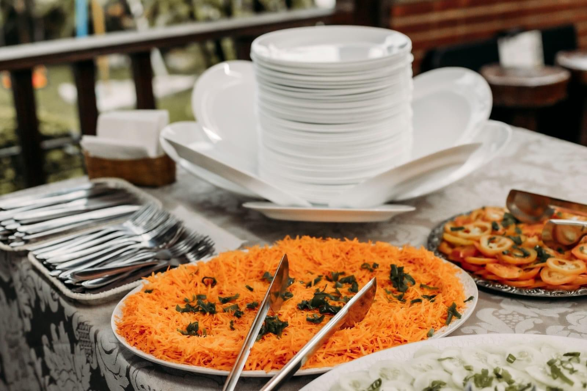

SOBRE OS SERVIÇOS DE BUFFET EM DOMICÍLIO
POR QUE ESCOLHER O BUFFET MÃOS UNGIDAS?
Quando se trata de celebrar momentos especiais, a escolha do serviço de buffet é fundamental. O Buffet Mãos Ungidas, com sua renomada trajetória de 15 anos, se destaca como uma escolha primorosa para quem busca qualidade, sofisticação e personalização em serviços de buffet em domicílio.
Experiência e Confiança: Nossa jornada de mais de uma década no mercado de festas e eventos em São Paulo nos proporcionou uma compreensão profunda das necessidades e desejos de nossos clientes. Cada evento é único, e entendemos isso profundamente. Com o Buffet Mãos Ungidas, você está optando por um parceiro experiente que sabe como tornar cada ocasião inesquecível.
Qualidade Incomparável: Nosso compromisso com a excelência se reflete em cada prato que servimos. Selecionamos cuidadosamente os ingredientes, assegurando frescor e sabor excepcionais. Nosso menu diversificado é preparado por chefs talentosos, que se dedicam a criar experiências culinárias que encantam os paladares mais exigentes.
Serviço Personalizado: Entendemos que cada evento tem suas particularidades. É por isso que oferecemos serviços totalmente personalizáveis. Seja uma reunião íntima, uma grande celebração ou um evento corporativo, adaptamos nosso serviço para atender às suas necessidades específicas, garantindo que sua visão se torne realidade.
Flexibilidade e Versatilidade: De pequenas reuniões familiares a grandes eventos corporativos com milhares de convidados, nossa equipe está preparada para atender a eventos de qualquer porte. Nosso portfólio abrangente inclui uma variedade de estilos de serviço, desde coquetéis elegantes até churrascos descontraídos, garantindo que possamos atender a todas as suas expectativas.
Compromisso com a Satisfação do Cliente: Nosso objetivo principal é a satisfação total dos nossos clientes. Cada detalhe é cuidadosamente planejado e executado para garantir que seu evento seja um sucesso estrondoso. Com Buffet Mãos Ungidas , você pode relaxar e desfrutar do seu evento, sabendo que todos os aspectos do serviço de buffet estão nas mãos de profissionais dedicados e atenciosos.
 

COMO FUNCIONA O BUFFET EM DOMICÍLIO ?
1. Planejamento e Consulta inicial
- Primeiro Contato: Tudo começa com o seu contato. Durante nossa consulta inicial, discutimos os detalhes do seu evento de buffet em domicilio, incluindo o número de convidados, data, local e suas preferências específicas em relação aos lanchinhos e serviços adicionais para festa na sua casa ou empresa.
- Personalização do Menu: Oferecemos uma variedade de opções de lanchinhos, como hotdogs, hamburguinhos, salgadinhos, entre outros. Você pode personalizar o menu conforme as suas preferências e as necessidades do seu evento ou festa em casa.